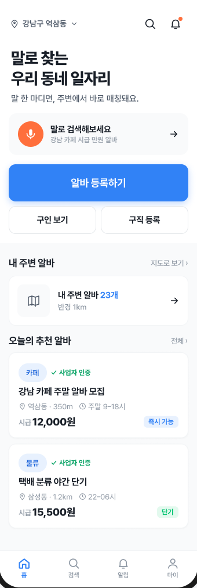
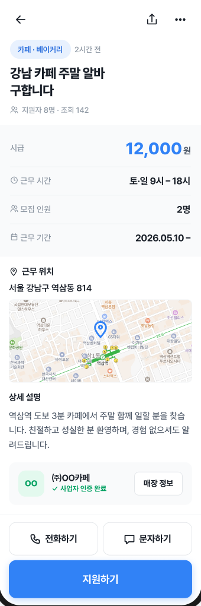
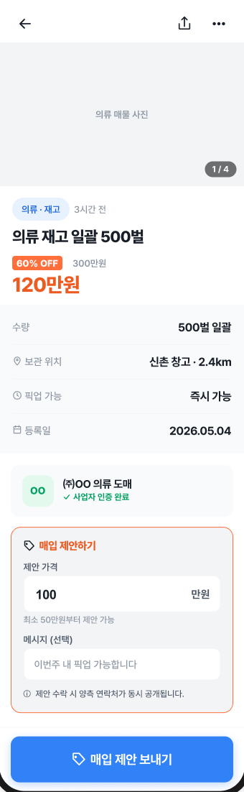

음성 검색
복잡한 입력 대신 말로 검색하는 흐름을 강조해서, 서비스의 진입 장벽을 낮춰줍니다.
서비스 소개
SpotJob는 말로 검색하고, 가까운 공고를 찾고, 매칭과 거래까지 이어지는 흐름을 직관적으로 보여주는 서비스입니다.

주요 기능
소개 페이지에서 가장 중요한 건 기능을 나열하는 것이 아니라, 사용자가 어떤 문제를 어떤 흐름으로 해결하는지 자연스럽게 보여주는 것입니다.
복잡한 입력 대신 말로 검색하는 흐름을 강조해서, 서비스의 진입 장벽을 낮춰줍니다.
위치 기반으로 주변 일자리를 빠르게 찾는 구조를 전면에 배치해 실용성을 보여줍니다.
공고 상세에서 지원하고, 이후 채용 확정 화면까지 이어지는 사용자 경험을 한 번에 전달합니다.
일자리 흐름과 함께 매물 거래 기능도 보여줘, 포트폴리오로서 서비스 범위를 넓게 설명할 수 있습니다.
화면 흐름
첫 화면에서 관심을 끌고, 검색과 공고 상세, 매칭 완료, 거래 성사까지 스토리처럼 이어집니다.
메인 CTA와 주변 일자리, 추천 공고를 한눈에 보여주는 첫 진입 화면입니다.
말로 조건을 입력해 검색할 수 있는 간편한 탐색 흐름입니다.

시급, 시간, 위치, 상세 설명까지 확인하고 바로 지원으로 이어집니다.
지원이 완료되면 확정된 상태를 보여줘 신뢰를 높입니다.

제안 가격과 메시지 입력을 통해 거래를 한 단계 더 밀어줍니다.
최종 거래가 완료된 상태까지 보여줘 서비스의 완성도를 강조합니다.
홍보 자료
앱 화면만 나열하지 않고, 홍보 포스터와 데모 영상을 함께 배치하면 서비스의 실제 맥락이 더 잘 전달됩니다.